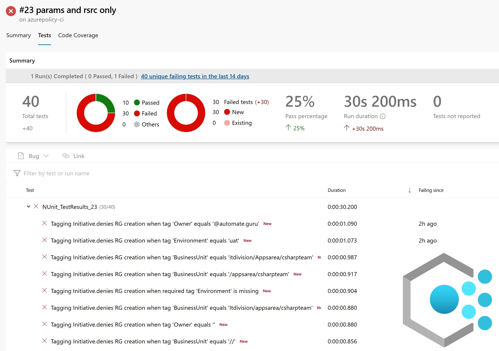
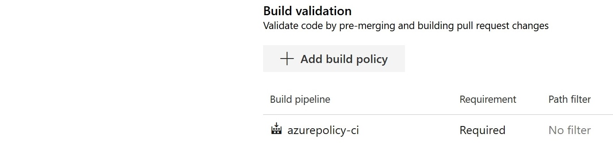
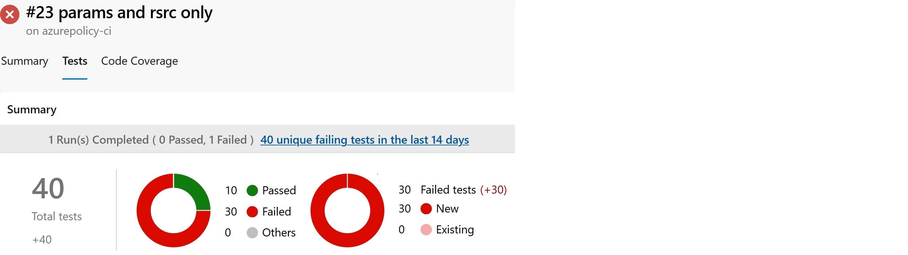
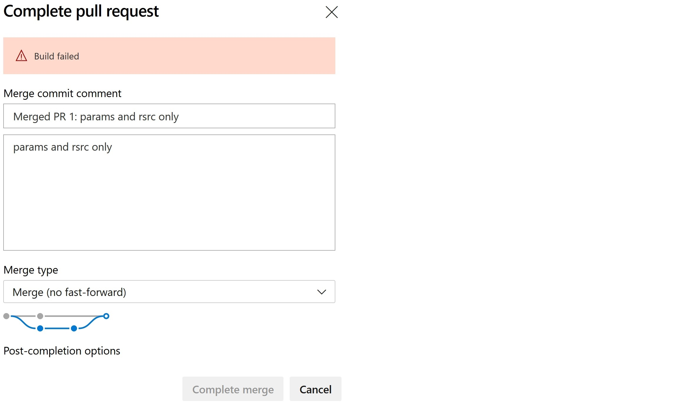
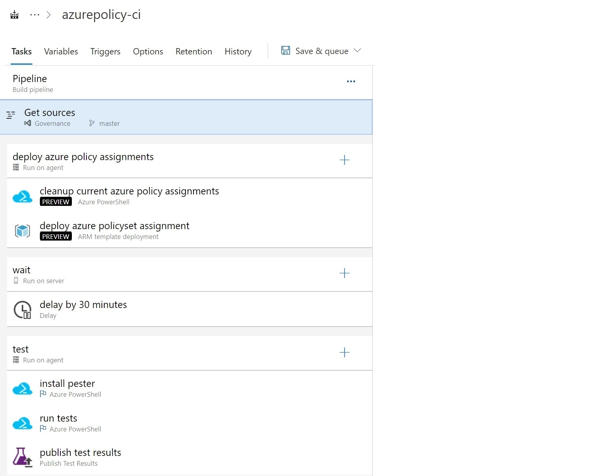

Security and Compliance as a Code: Azure Policy Continous Inspection

In this blog entry, we will show you how to integrate automated Azure Policy tests with your DevOps process. Automated Azure Policy deployment, invoking automated Pester test, and publish tests report will be part of your pull request process. These steps will be performed in the sandbox so that it will be safe for the rest of your environment.
After completing the steps described in this and last article, you will have everything ready to start writing Azure Policy without the need to perform many manual tests.
The most important question always is why!
In one of the previous articles, we presented Pester as a tool used for test-driven development of Azure Policy. You might find it overkill to achieve test-driven development for Azure Policy. We agree that usually, it will not be required to write tests. You will also find out scenario details there.
The current state of the art is that we have some complex requirements regarding tag values. We have to validate tag values (emails, dates, multiple values separated by a slash). It is not that easy to satisfy them without using ARM function logics inside Azure Policy.
The next part of this short Compliance as a Code series will be about more advanced techniques related to Azure Policy development.
Then you will see how complex the implementation can be!
Reading this article is a must for you...
... if at least one of the statement is true:
-
You already use Azure Policy, or you are going to use it.
-
Having a consistent and compliant Azure environment makes sense for you.
-
An automated way of validating your changes is welcome for you.
-
You want to perform end-to-end Azure Policy assignment effects checks without any additional effort.
-
You are sick when it comes to performing manual work.
How will this process look like finally?
-
There is a new compliance requirement, or one of the currents has changed.
-
A new feature branch is created for Azure Policy development.
-
ARM template with Azure Policy/ Policy Set, Initiative, and Assignment resources is ready.
-
A new Pull Request is created.
-
A pipeline that deploys policy to a dedicated subscription is triggered.
-
It waits 30 minutes to be sure that assignments are in-place.
-
It validates if the policy is working as expected by performing automated Pester tests.
-
Test results are generated and published.
-
PR cannot be completed if any test has failed.
Branch policy

PR cannot be completed if any test has failed.



Who are you?
We assume that...
PS C:\> $You.SessionLevelReadiness -GE 200
True
... so we are re not providing detailed, step by step instructions on how to create every single resource required to deploy this solution. We believe that you can deploy and configure them without additional instructions, or you are able to find them on your own.
Almost step by step guide.
Repository hierarchy.
¦
¦ README.md
¦
+---arm
¦ ResourceGroups.json
¦ TaggingGovernance.json
¦
+---scripts
Tagging.Tests.ps1
TaggingGovernance.json is a placeholder for Azure Policy implementation.
{
"$schema": "https://schema.management.azure.com/schemas/2018-05-01/subscriptionDeploymentTemplate.json#",
"contentVersion": "1.0.0.0",
"parameters": {},
"resources": []
}
Pipeline

Pipeline details
cleanup current azure policy assignment - script
Get-AzPolicyAssignment | `
Where-Object -Property Name -NE 'SecurityCenterBuiltIn' | `
Remove-AzPolicyAssignment
install pester - script
Install-Module -Name Pester -Force -SkipPublisherCheck
run tests - script
Set-Location -Path $Env:BUILD_SOURCESDIRECTORY
Invoke-Pester -OutputFile "./testresult.xml" -OutputFormat 'NUnitXML'
publish test result

Author

Kamil Więcek is twentynine years old IT passionate that will continue to learn, do home projects and practicing new technologies even if he becomes a multimillionaire. Big fan of the following sentence: "if you describe a process mentioning someone's name, then it is not automated."